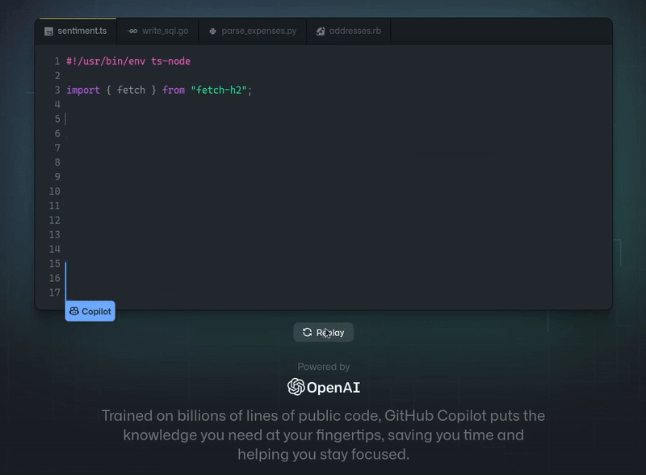
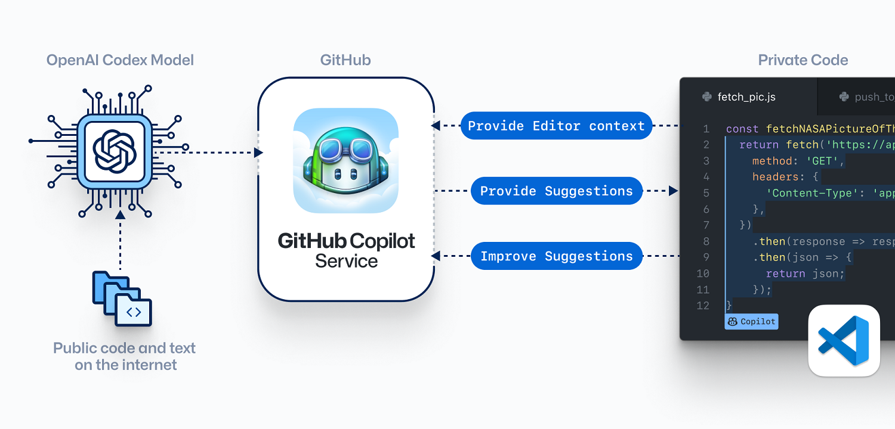
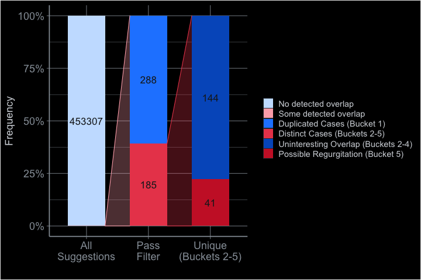

Surya’s website
Table of Contents
1. About-me
Hi! I’m Surya. A teenager interested in all most things tech! My current
interests are:
- Arch Linux
- GNU Emacs (and also
Doom Emacs)
- Emacs org-mode
- Git
- Nix (and also
GNU Guix)
- Shell scripting
- Functional
programming
- Debating
2. Humor
3. Marijuana Legalization in the Indian Context

Figure 1: Source: The New York Times
3.1. The History of Marijuana Usage in India and its uses

Figure 2: Parvati offering Shiva Bhang, a beverage made using cannabis
Cannabis is a substance linked to India since the very beginning (Cannabis Indica- It’s in the name!). The first documentation of the plant in India is in the Vedas, so anywhere from 1 400 to 2000 BCE!1 Just the age of the plant could be enough to classify it as inseparable to the nation’s culture- as it has found its way into the cuisine, tradition, and religion of India. So it should come as no surprise that marijuana usage was (and still is ) widespread in India.
Cannabis is more than just an old plant. Not only is it well-known as a recreational and medicinal drug, but strains of the cannabis crop can be used to make rope, fabric, and possibly even semiconductors!2
3.2. Why we should Legalize Cannabis:
3.2.1. Cannabis is less dangerous than already-legal drugs
The fundamental argument for the full legalization of the crop is simply that it makes no sense for a plant with established, cultural and medical uses to remain banned. Marijuana as a drug has been proven to be less harmful than other, widely-available substances like alcohol or tobacco3. Therefore, legalizing the drug and giving adults the liberty to access a cultural, medical, and recreational product isn’t unreasonable. I believe in making marijuana no less accessible than cigarettes.
That the only purpose for which power can be rightfully exercised over any member of a civilized community, against his will, is to prevent harm to others.
John S. Mill, On Liberty
3.2.2. Bans are expensive (and legalization is profitable)

Figure 3: Source: The Atlantic
Banning any addictive substance, let alone one of traditional significance, is (for lack
of a better description) a massive pain in the rear (source: trust me bro). Not just
history, but by the present too is evidence of this. Weed is still found everywhere in
India, and perhaps not despite its legality, but because of it (think: teens being
drawn to exciting, illegal activities).
While I cannot claim that marijuana is totally safe- for a ban of such a substance to be enforced properly, it would take an astronomical sum of money. And it still cannot be 100% effective. The other possibility is that it would spawn black markets giving people access to unregulated, harmful variations of the plant, which is the state of things currently.
The fact is this: the people want weed, and they will get weed. Whether they will get this from a regulated, safe dispensary or from a drug dealer who laces it with fentanyl is the only thing that the government can control.
Every pair of hands that a bag of marijuana crosses adds not just more danger to the person smoking it, but also a rupee the government missed out on. Not only can marijuana act as a source of income, legalizing it can also let the government dictate who should (and shouldn’t) have access to herb. This allows prevention of the substance from reaching, say, people with a history of mental illness or ex-convicts or teenagers.
What’s more is that severe punishments for possession will discourage those who suffer from addictions to these substances to seek help or go to rehab, fearing they might get be charged with crime.
3.2.3. Marijuana as a medical herb

Figure 4: Source: Harvard Health
Marijuana is a drug with medicinal properties, and while some of the rumored medicinal properties are proven, others are not. Those against decriminalization of marijuana often cite the inefficiency of CBD products as proof that the argument for medical marijuana is invalid4. First of all, I believe that marijuana should be legalized even if it has no medicinal properties (the other arguments for legalization are of more importance). Secondly, inefficiencies in the current state of cannabis-based drugs does not mean the plant itself lacks medical merit. This makes an interesting case, and highlights the duality of the herb.
- Marijuana as tobacco
One side of the leaf on making the case for (or against) marijuana is its recreational uses. This makes it similar to tobacco- both are addictive, recreational drugs.
One might be less harmful, but make no mistake- there’s no denying that both these substances have adverse effects on health. An extension of this fact is that both THC and nicotine cause more harm to teenagers than adults, meaning that it’s more important to prevent this group from accessing the drug. Leaving things as they are, with a loosely-enforced ban, is the worst possible scenario.
- Marijuana as opium
The other side of the leaf is that cannabis and cannabanoids possess medical properties. This aspect of the plant is similar to opium, the chemicals from which (opioids and opiates) are used for medical reasons. While opioids are considered to be more effective and specialized- CBD-based medicines have also showed efficacy5. While exact uses and efficacies of the chemicals are still under research6, the key point is that there is a wide array of possibilities with the drugs.
In addition, it takes a long time to research and develop medicines. Developing drugs from the cannabis crop will take time- and it is harder to perform precise studies on the safety of the drug while it’s illegal. Cannabis-based drugs require research and studies that could benefit immensely from its legalization.
3.2.4. Marijuana is a gateway drug
Another often-used phrase in the marijuana debate is “gateway drug”. The argument is that marijuana usage opens the gate and makes people more likely to try out other, more dangerous drugs- like cocaine or heroin.
This is obvious, considering the places that one has to go through to obtain recreational marijuana. A cigarette smoker and a weed smoker have to go to very different places to obtain their substances (one of which consists of exposure to more serious crimes), and the only way to stop this is to make cannabis available in safe, regulated places- in other words, legalization.
Cannabis might be a gateway, and when closing it off entirely isn’t possible- the best thing to do is to protect those who enter it and restrict entry.
3.2.5. Conclusion
To conclude, I firmly believe that the issue with marijuana addiction can be resolved only through legalization. Marijuana should be made available to the consenting adult population, just like cigarettes. The taxes paid by smokers should be used to rehabilitate addicts. Those seeking the recreational or cultural aspects of pot should have the liberty to do so; along with information on exactly how the plant is damaging to health. In addition, pharmaceutical companies should permitted to use cannabis and its derivatives in medical products for research purposes.
4. GitHub Copilot
4.1. What Copilot is
Microsoft-owned GitHub has caused quite a bit of commotion in the software scene [free or otherwise] with the announcement of GitHub Copilot, an ML using extension for Visual Studio Code trained on code from public repositories on the site. While software assistance for developers is not a remotely new concept, Copilot differs from other services in its ability to create multiple lines, even entire functions of code based on the name of a function and the developers’ comments. From the demos and previews on the copilot website, the description “pair programmer” isn’t all that inaccurate.

Figure 5: Source: GitHub
4.2. How does it work?
The service is currently available in a technical preview, so things might change- but fundamentally, Copilot uses OpenAI models [trained from GitHub code] to find the best match for the comments and the function name provided to it by the IDE.

Figure 6: How GitHub Copilot works (Source: GitHub)
4.3. Is this legal?
There are two main points in the flow of data with the service that have an ambiguous legal status:
- Firstly what would happen if the code from public repositories is licensed under a strong copyleft license [one which may require credit to be given to the original author if the code is reused]. Should Copilot have to comply with the licenses for processing code? [Exploring the legality of training the AI.]
- And second, whether or not the “machine-generated” code is actually a derivative of the input code given to the AI. Should the users using Copilot have to follow the restrictions of the licenses of the training code on their own code? [Exploring the legality of using the AI.]
4.3.1. Is training Copilot legal?
This should come as no surprise, but the latest project of a trillion-dollar corporation, is, in fact, legal. Ignoring ethical concerns, this section of the GitHub terms of service grants GitHub the right to use your code- regardless of license.
This means that the first point holds no validity as long as Copilot is trained using only the code hosted on GitHub. Even in the case that this foreign code is used, the case could be made for the use of this code is transformative, and possibly under the scope of fair use.
GitHub is safe here, as predicted by its CEO in this tweet.
4.3.2. Is Using Copilot legal?
However, the second point is more interesting. In theory, the AI is supposed to understand public code to synthesize its own code based on its understanding of the code. Shown by this case study, it is possible for the AI to reuse code from the public repos, verbatim.
A hilarious example of this is Copilot’s attempt to write an about-me page, on which request it output the exact GitHub bio of user David Celis, and another where the code is taken word-for-word from the Quake III game, including the swear-y comments.
This means that however rarely, [GitHub published that the rate at which this happens is around 0.1%, and is more common on files where Copilot is given little to no information, or just empty files.] it’s still possible for code to be reused with no transformation, and this is the situation with the highest legal ambiguity.
GitHub’s explanation for this is:
This investigation demonstrates that GitHub Copilot can quote a body of code verbatim, but that it rarely does so, and when it does, it mostly quotes code that everybody quotes, and mostly at the beginning of a file, as if to break the ice.

Figure 7: Copilot suggestions grouped based on overlap with test data (Source: GitHub)
Ultimately, it’s not easy to determine exactly what this code is- and whether or not it’s “machine-generated”. This is more important that it seems, especially for developers. For instance, code that is derived or forked from a project licensed GPLv3 is legally also supposed to be licensed under the same GPLv3 license. Worse case scenario? This means that programmers might unintentionally give up their freedom in licensing their software.
That’s just the worse case scenario, however- because copyright laws are a little more complicated. Julia Reda, a legislator at the EU writes:
[…]it suggests that even reproducing the smallest excerpts of protected works constitutes copyright infringement. This is not the case. Such use is only relevant under copyright law if the excerpt used is in turn original and unique enough to reach the threshold of originality[…] The short code snippets that Copilot reproduces from training data are unlikely to reach the threshold of originality.
This is just speculation, though. There are conflicting opinions from other legal experts- and only predictions can be made until a judge’s verdict is made, after the release of the software. The most concerning factor, to me personally, is that the law might not be equipped to properly deal with GitHub copilot. This project is the first of its kind- and the legislation that such a program has to be put under is still unclear. This makes it all too easy to make an insufficient or even incorrect judgement, and worse yet, this is the link on the chain furthest from the control of the average person like you or me. We can only hope that legislators are able to grasp the nuance and difficulty in categorizing such an innovative, out-of-the-box idea.
4.4. Is this ethical?
As fun as it is for me to point at the rule book and scream “That’s not enough!” or “That’s Kafkaesque!”, the moral and philosophical issues are probably more important here. They’re also pretty straightforward:
Is it ethical to use free/open-source code to make a proprietary service?
After all, GitHub copilot trains on a heap of FOSS code, but the end product of this training is a closed-source, paid-for product. While this is clearly the most important issue, it’s not one that I’m qualified to pass judgment on. I believe that this is part of the reasoning for a programmer to pick a particular license [for instance, how GPLv2 or WTFPL permit this, but the more popular GPLv3 does not]. As a consequence of this belief, I think it’s completely unethical for GitHub to ignore the choices of developers just because of a vague clause in their terms of service, that most would not expect to be used this way anyway. However, it’s not all bad. GitHub acknowledges the choice of the end user to determine if the source of code is okay to be used in their project, and write this:
The answer is obvious: sharing the prefiltering solution we used in this analysis to detect overlap with the training set. When a suggestion contains snippets copied from the training set, the UI should simply tell you where it’s quoted from. You can then either include proper attribution or decide against using that code altogether.
4.5. Other issues with copilot
4.5.1. Copilot is not free software
There are many other “issues” regarding copilot-and not just about legality- some of which the Free Software Foundation has published here. The FSF requests developers not to use the service, citing its dependencies on proprietary software (particularly VSCode). The FSF also recommends doing away with GitHub entirely.
4.5.2. Copilot is biased
Perhaps as an artifact of being trained mostly from one source, Copilot might have inherent biases and inefficiencies- as pointed out by this paper. In the words of Kyle Wiggers:
After repeated sampling from the model, where Codex was given 100 samples per problem, OpenAI says it manages to answer 70.2% of the HumanEval challenges correctly. But the company’s researchers also found that Codex proposes syntactically incorrect or undefined code, invoking functions, variables, and attributes that are undefined or outside the scope of the codebase.
My personal bet as to why this might be is simple: Garbage in, garbage out. Copilot is not trained on high-quality code, but rather from popular repositories on GitHub with up to hundreds of contributors each- and not all of these files are full of high-quality code. In other words, garbage in, garbage out. It’s possible to tune the training dataset go get rid of redundant code, but it’s a lot of work: and mannual, human work at that. I’d only expect the quality of code to go up after launch, when bad code is rejected by the users, giving the AI a chance to analyze what kind of code is accepted more often.
4.5.3. Copilot might not be useful?

Figure 8: Source
I’ve been going on about the legal implications of this product, mainly because it seemed very interesting to me [and also because I’m not qualified or experienced enough to discuss the user experience]- but the elephant in the room is obviously the actual utility of this service… which seems to be hit or miss.
This article (that I highly recommend you read), written by a co-author of the paper that inspired the creation of the Codex backend of Copilot, claims that the dips in quality of code might be due to the behavior of the code algorithms. He even calls Copilot “[…] worse than the average programmer [in some ways]”, referring to how unlike humans, Copilot’s entire knowledge comes from public code, with no regard to documentation, compiler warnings, et cetera.
The thing to remember is that Copilot is an early preview of a very new technology that’s going to get better and better. There will be many competitors popping up in the coming months and years, and GitHub will no doubt release new and better versions of their own tool.
4.6. Conclusion
Obviously, Copilot has its flaws. Duh. But like Jeremy Howard writes…
Complaining about the quality of the code written by Copilot feels a bit like coming across a talking dog, and complaining about its diction. The fact that it’s talking at all is impressive enough!
Truly, GitHub Copilot is a step forward for programmers. Contesting if it should exist is out of the question. Really, the only question here is how it should be implemented- and I think that most of the flaws will be ironed out with time. I’m nothing but excited to see the effects of such a program, and I hope it reduces the barrier to programming!